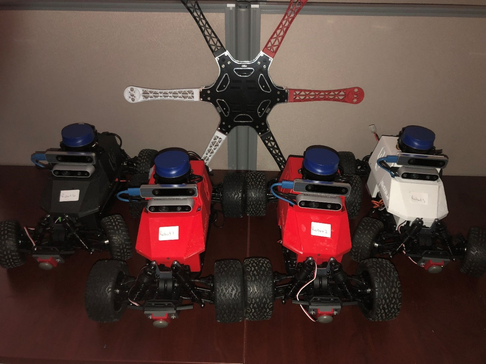

AirOU Race Cars Pro (ARCPro)
ARCPro Overview:
Our robotic car is designed and built to autonomously navigate unknown areas and create accurate 2D/3D maps. Also, the vehicles are capable of intra-vehicular and vehicle-to-infrastructure communication. In this tutorial, we will go through the hardware design of ARCPro first. Then the instruction to turn on the cars and hardware setup is explained step-by-step. Lastly, we instruct you to use ARCPro software to launch different sensors (e.g., LiDAR, depth camera).

Onboard Hardware Specs
ARCPro Main Components:
- Intel NUC Processor
- 2D LiDAR (YDLIDAR X4PRO)
- Intel D435i RGB-D Camera
- Servo Motor
- Controller VESC
Initial Boot-up:
You need to follow these steps to turn on the robot. It is very important to keep this order
Plug VESC battery to VESC (Front wheels should “lock” when VESC is plugged in and you may hear a sound) Plug NUC battery to power convertor. Plugin NUC. Turn on the intel NUC by pushing the power button on the front. The NUC will turn on and you will see the lidar on the top starts spinning!
- The connector to connect the VESC battery
- The connector for connecting NUC battery
- After you connect the batteries:
Note: if the intel NUC does not turn on, please let the class staff know immediately.
Using Car:
You can connect to the car in three different ways: direct access, remote access using ssh, remote access using Remote Desktop Directly connect to the car: you can connect a monitor and keyboard/mouse to the car to get access to the car. You may use a monitor/keyboard/mouse in the lab to connect to the car. Connecting to the car remotely: You can connect to the car through wifi either using Remote Desktop or by ssh.
Starting MuSHR Package:
Mushr is the component responsible for, among other things, controlling the robot. It runs inside a docker container, and generally receives input via bluetooth.
- Once logged in, open a terminal and launch the Mushr docker container using the command
mushr_noetic - You will dropped into a container. Run
roslaunch mushr_base teleop.launch - This will launch the teleoperations and allow you to control the robot with the bluetooth controller. You can also launch rviz(background the roslaunch command with ctrl + z, then run
rviz) to check out a visual representation of the environment, and see the lidar. Make sure to adjust the fixed frame to /car/base_link
Using controller:
After launching teleop, you have to press center button on the Controller the light should start flashing indicating the controller tries to find the robot, after that, it will be constantly on (if the controller is not connecting, you have to connect the car directly to the monitor and following the steps provided in this page). If the controller does not turn on, it may indicate it does not have enough charge, and you have to recharge it. We provide cables in the cabinet for charging. Please put it back after you finish charging. Remember you must press L1 (the Deadman’s switch) to move the robot. The left joystick is for moving back and forth, and the right joystick is for steering.
Starting the camera
The robot uses an Intel Realsense d435i camera that provides RGB, infrared, depth, and IMU(accelerometer and gyroscope) data. This data is used by the other components to build a model of the environment, but it's possible to run the camera components without those other tools. To launch the camera:
- Open a terminal, and run `roslaunch realsense2_camera rs_camera.launch unite_imu_method:=linear_interpolation
- If you'd like to enable the point cloud, add
enable_pointcloud:=true(may not be working) - Open another terminal, and launch Rviz to view the camera output. Set the fixed frame to camera_link, and add topics like /camera/color/image_raw for example. Our software is based on MuSHR software packages. For more information, please visit MuSHR tutorialLinks to an external site.
How to shut down the race car:
-
To shut down the system, press the power button in NUC. Please do not hold it! Otherwise, it damages the NUC over the time
-
Unplug the NUC cable.
-
Unplug the NUC batter
-
Unplug the VESC battery.
Shutdown process is complete.
FAQ and common issues
- Problem: Mushr is reporting VESC out of sync errors, and the LIDAR won't start.
- The cables for the LIDAR probably need to be swapped. Usually this happens because the LIDAR isn't detected, and sits on the same port as the VESC. Check /dev to see if that's the case. If the symlinks for both the ydlidar and VESC are pointing to the same thing, that's an issue.
- I can't connect to the robot.
- First make sure you are on the campus wifi or ethernet. Try SSH-ing before remote desktop. If SSH doesn't work, connect the robot directly to a monitor via HDMI and check the network connection. You can also try pinging it at its address.
AirOU Race Cars (ARC)

Regarding hardware and software information for the ARC system, most information and tutorials can be found on the MuSHR website which is the project ARC is derived from.
For any questions or concerns, feel free to reach out to us at:
tyler.m.roman-1@ou.edu (Software) and dvargas88@ou.edu (Hardware & MiniCity).
There is also a forum for MuSHR issues located in their GitHub organization discussions.
Outside Resources
Regarding the software for the MuSHR/ARC system, most information and tutorials can be found on the MuSHR website
Links to an external site.
For any questions or concerns, feel free to reach out to Tyler Roman at tyler.m.roman-1@ou.edu. There is also a forum for MuSHR issues located in their GitHub organization discussions
Links to an external site..
We recommend at least going through the following tutorials:
Quickstart (Legacy): This will go over getting the MuSHR repo and running the MuSHR simulation.
Intro to ROS: As well as providing some basic insight into how ROS works, it also goes over how to create a package and subscribe to and publish to ROS topics in the MuSHR system
General System Overview: Details on the hardware and ROS topics (I highlight key takeaways in the next section)
For the purposes of documentation, we will only go over methods and information relevant to running the base sensors in ARC system, and anything that might be of resource to a new user